R
- bare bones
- takes up little memory
- 7 powerful base packages
- FREE/Open Source
R for SAS Users
Statistical Horizons
Event Dates: May 28-29, 2026
Last updated: Oct 03, 2026
Melinda Higgins, PhD.
Director Biostatistics and Data Core
Emory University - School of Nursing
Slides & source code available on GitHub
Compare R and SAS
$$
R-Ladies Mission
R-Ladies is a worldwide organization whose mission is to promote gender diversity in the R community.
As a diversity initiative, the mission of R-Ladies is to achieve proportionate representation by encouraging, inspiring, and empowering people of genders currently underrepresented in the R community. R-Ladies’ primary focus, therefore, is on supporting minority gender R enthusiasts to achieve their programming potential, by building a collaborative global network of R leaders, mentors, learners, and developers to facilitate individual and collective progress worldwide.1
Agenda
Tonight’s Agenda
Quick Introductions
Introduce Yourselves!
Why Learn RMarkdown?
Learn R Markdown
https://rmarkdown.rstudio.com/
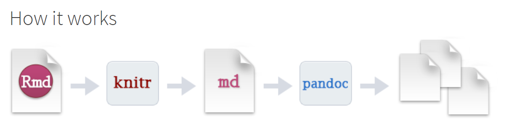
When “render” your document, R Markdown feeds the .Rmd file to knitr, which executes each code chunks and integrates the output into the document as a new markdown (.md) document that includes the code and its output.
The markdown file generated by knitr is then processed by pandoc (which is part of RStudio Desktop) which is responsible for creating the finished format.
Think of Pandoc as the “Swiss Army Knife” for converting documents between different formats https://pandoc.org/.
Create an Rmarkdown File
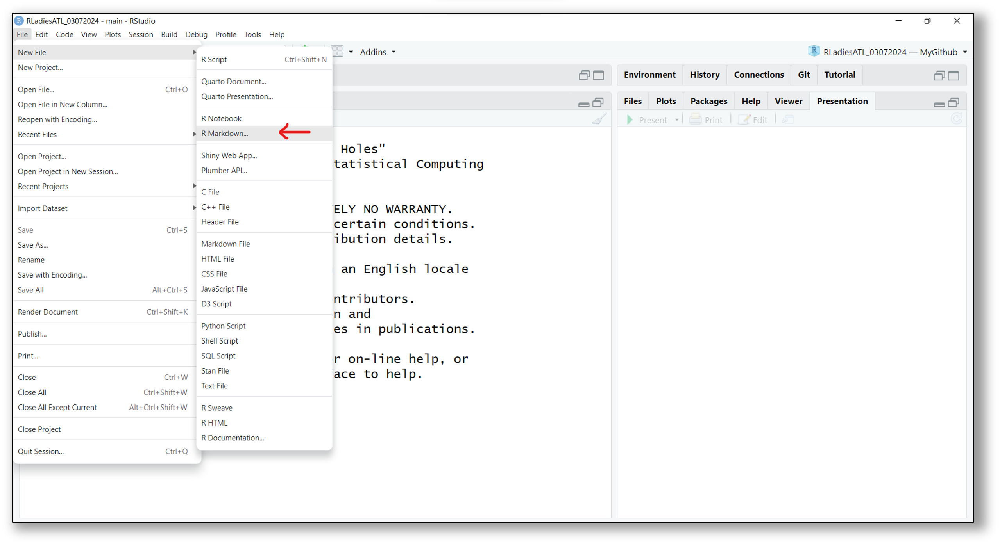
Start Rmarkdown File - Metadata
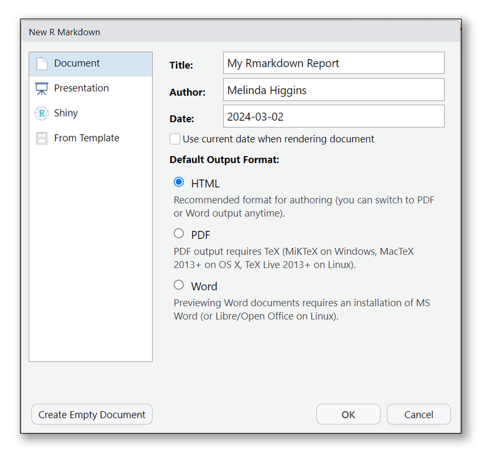
To get started, use the built-in template:
*.html file.
tinytex https://yihui.org/tinytex/ R package will work.Rmarkdown Sections
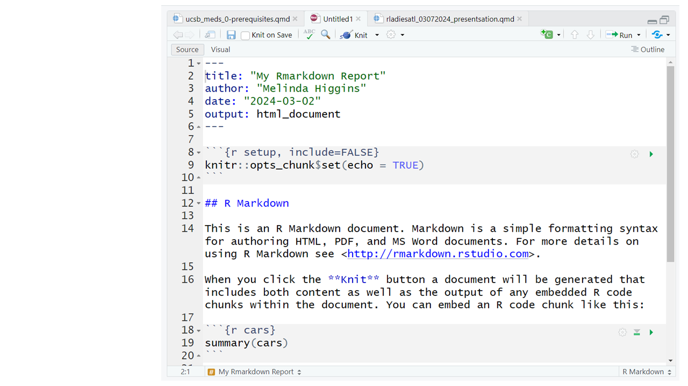
Example RMarkdown Template
Rmarkdown Sections
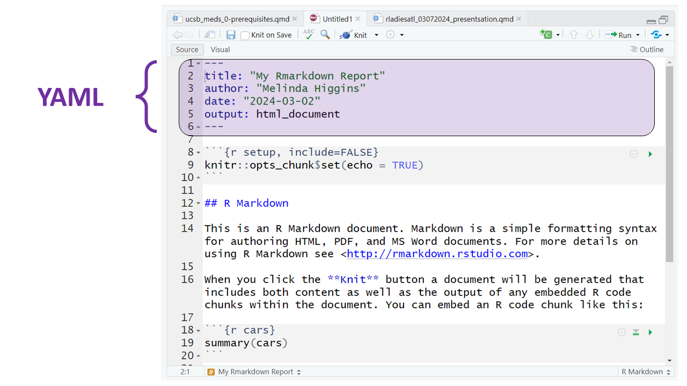
Example RMarkdown Template
At the top is YAML (yet another markup language).
This of this as metadata for your document. Usually at a minimum is Title, Author and format of document to be rendered.
Rmarkdown Sections
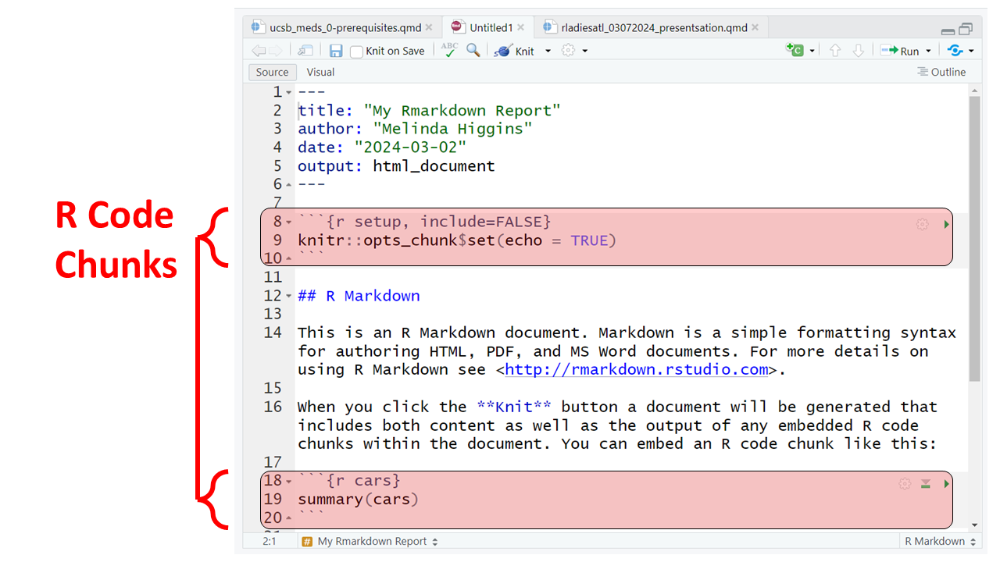
Example RMarkdown Template
The Rmarkdown document combines both R code and “marked-up” text. Here are 2 R code chunks highlighted.
Everything inside ```{r} down to ``` is R code.
Rmarkdown Sections
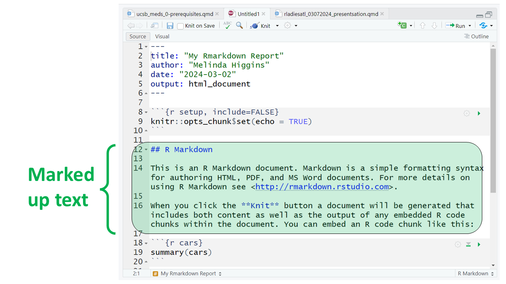
Example RMarkdown Template
Everything else that is not YAML and is not a code chunk is simple text with “mark-up” syntax added to format text as you would like.
Rmarkdown Sections
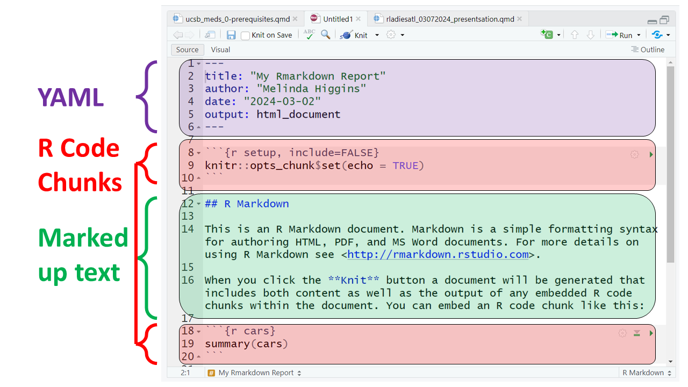
Example RMarkdown Template
When we click “Knit”, Rmarkdown uses the information in the YAML settings to render the document in the requested format by combining the final formatted text plus the output from the executed code into one final document.
NO MORE CUT AND PASTE!!
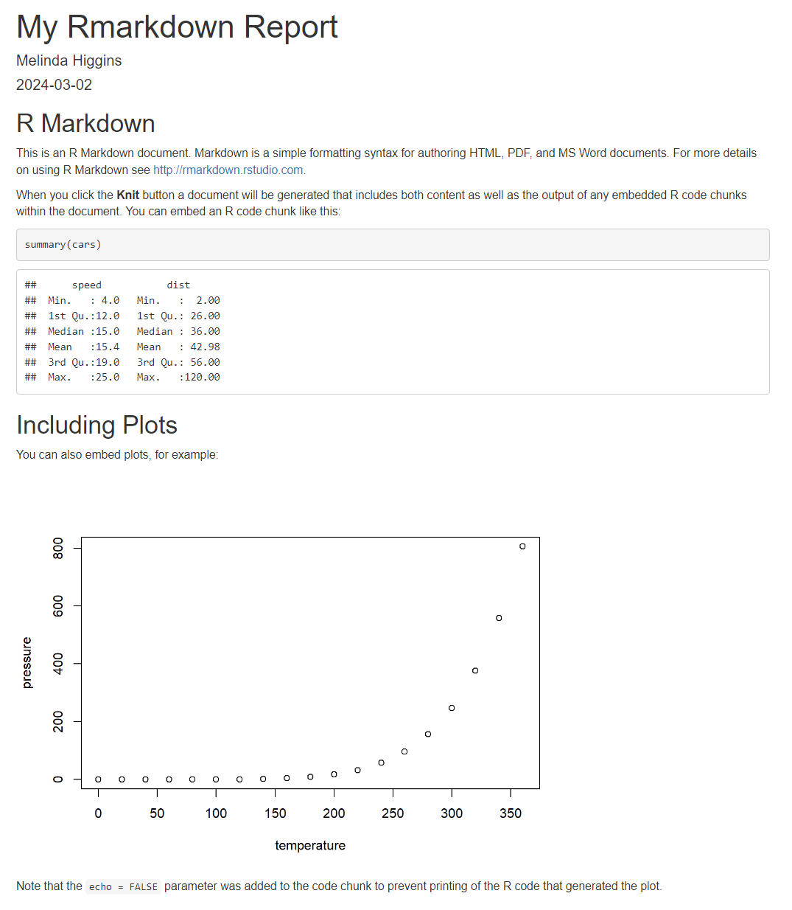
The final rendered document as an HTML document (as viewed in a Browser).
Happy Reporting!
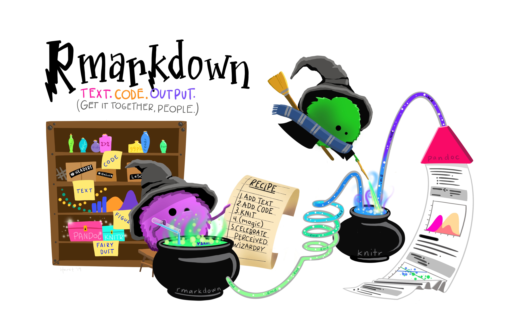
Artwork by Allison Horst: R & stats illustrations by @allison_horst
Contact Information
Feel free to contact me with any feedback, concerns or suggestions:
Resources
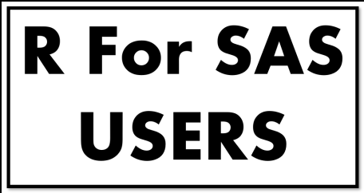
R for SAS Users